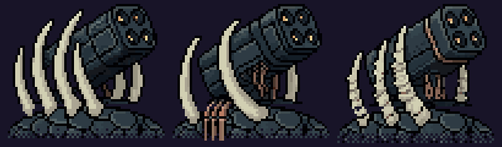
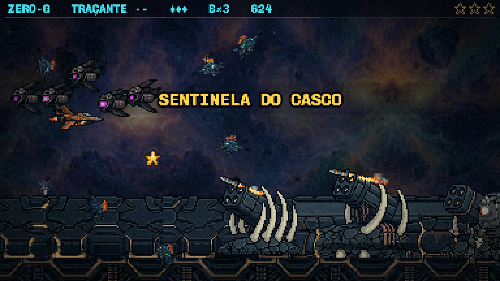
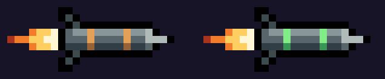

O seu pedido: as chaminés saem; ficam só os lançadores, com a variação da T2; a peça precisa parecer ligada ao casco; o projétil vira um míssil de verdade, com propulsor e rastro, saindo das 4 bocas.
Tudo aqui já está instalado no jogo (http://localhost:5173, F3, do casco em diante). Nada foi commitado.
A cor crua das candidatas já era a do casco. O que destoava era o "morro" que cada uma trouxe como chão: um bloco de corte reto, pintado com os tons claros em área grande. Ele saiu. A base agora é um domo de escamas recortado da própria arte do casco (a peça das escamas, de onde os ossos do casco já saem), que afina nas pontas e se desfaz no pé. As costelas, o casulo e os canos de cobre são os da candidata, pixel por pixel.

As três plantadas na F3 de verdade, atirando na nave parada.

O mesmo, com as torres passando devagar para dar tempo de cada uma disparar várias vezes. Cada variante reveza as quatro bocas: as duas de cima, depois as duas de baixo. O míssil nasce com o bocal na boca do casulo.
Conferido pelo registro de cada tiro (variante, boca, posição): as 12 bocas batem com as medidas na arte.
Corpo de aço, nariz claro, duas faixas, empenas; a chama do motor tremula em 4 quadros; o rastro é uma brasa que esfria no vapor cinza do casco e se desfaz.

Instalei o bronze: é o cobre que o casco já usa, então o míssil lê como munição do bicho. O verde está pronto e troca com um comando, se você preferir.
assets/raw/backup-casco-pecas/.